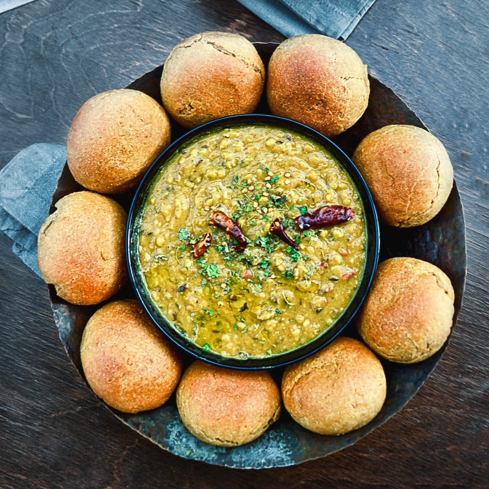
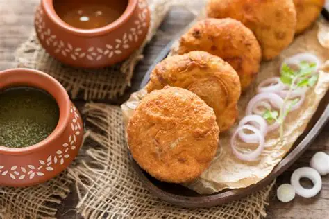
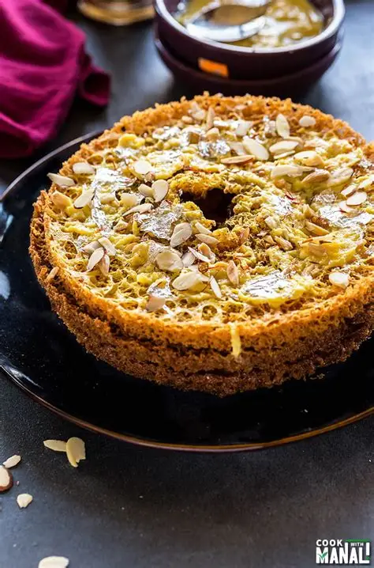
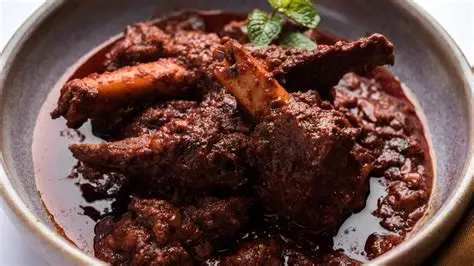
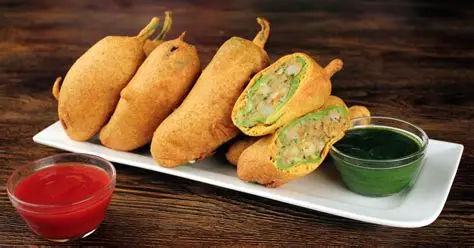
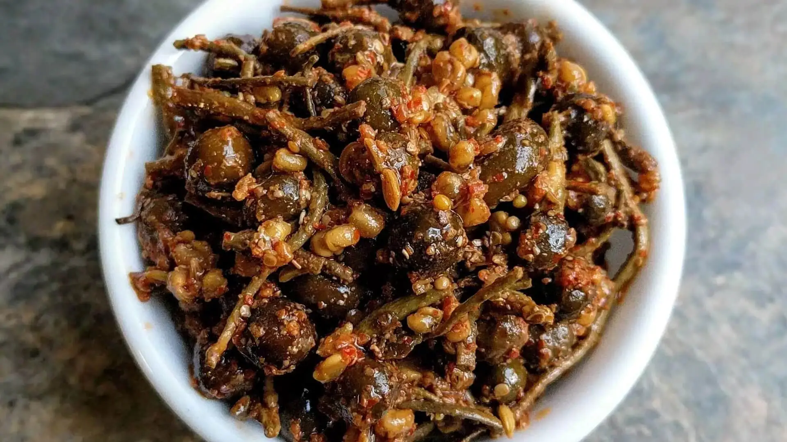

The soul of Rajasthan. Hard wheat rolls (Baati) are soaked in desi ghee and served with a spicy five-lentil dal and sweet crushed churma.

A spicy, golden-brown fried pastry stuffed with a savory onion filling. It's the most popular morning snack found at Rawat Mishtan Bhandar.

A honeycomb-shaped traditional Rajasthani sweet made from flour and ghee, often topped with Malai (cream) or dry fruits. A monsoon specialty.

A legendary mutton curry flavored with Mathania chillies. It was originally prepared for Rajput kings after a successful royal hunt.

Large green chillies stuffed with spicy mashed potatoes, dipped in gram flour batter and deep-fried until perfectly crispy and golden.

A unique desert vegetable dish made from dried berries and beans. It is tangy, spicy, and perfectly showcases Marwari culinary heritage.